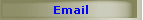
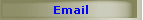

Las cincos zonas de la D.O.
 La D.O. Rías Baixas recibe el nombre de la zona
en la que se encuentra emplazada: las rías gallegas situadas más al
sur. Las tierras amparadas bajo esta D.O., de clima atlántico y
suave, se dividen, a su vez ,en cinco subzonas con ciertas
características que las diferencian: La D.O. Rías Baixas recibe el nombre de la zona
en la que se encuentra emplazada: las rías gallegas situadas más al
sur. Las tierras amparadas bajo esta D.O., de clima atlántico y
suave, se dividen, a su vez ,en cinco subzonas con ciertas
características que las diferencian:
. El Valle de
Salnes, con 1.487 hectáreas, es la subzona de mayor
superficie y se sitúa en la margen izquierda de la ría de Arosa, a
nivel del mar. La práctica totalidad de sus viñas pertenecen a la
variedad Albariño con una mínima presencia de la variedad
Treixadura.
. El Condado do Tea, con 545
hectáreas dedicadas al cultivo de vid en la montaña, se extienden en
el margen derecho del río Miño. Principalmente se cultiva la
variedad de uva Albariño, y sólo 3 hectáreas se dedican a otras
variedades blancas.
. Las 312 hectáreas de la subzona de
O Rosal, junto a la desembocadura del Miño, se
dedican principalmente al cultivo de Albariño y Loureiro en terrazas
fluviales.
. La subzona de Soutomaior,
incorporada a la D.O en 1996, con 19 hectáreas, se haya situada en
la ría de Vigo y en ella se produce uva de la variedad Albariño.
. En Ribeira do Ulla, incorporada en mayo de 2000,
con 46 hectáreas sitas a ambos márgenes del río Ulla, también, casi
exclusivamente, se cultiva uva Albariño.
A pesar de la
división de la denominación en estas cinco zonas, existe una
característica común en sus viñedos, que no es sólo la masiva
presencia de la variedad Albariño, sino también el carácter
minifundista de Galicia, puesto de manifiesto en unas tierras de
cultivo que con el paso de estos últimos años no son capaces de
producir la cantidad de uva que demanda el mercado. Así, en la D.O.
Rías Baixas se reparten entre 5.059 viticultores una superficie de
tan sólo 2.391 hectáreas.
Es curioso observar las viñas en estas
parcelas ya que en muchas ocasiones éstas sólo ocupan los bordes de
las parcelas, dedicando el centro de las mismas a otros cultivos.
Sin embargo, y debido a los elevados precios que se pagan por las
uvas, es cada vez más frecuente la plantación de parcelas completas.
Al mismo tiempo, son muchas las bodegas elaboradoras que poseen
plantaciones propias, la mayor parte con extensiones que oscilan
entre las 10 y 20 ha., aunque algunas superan las 50 ha. Y hay
también cosecheros que con una base territorial reducida, a veces 5
ha, e incluso menos, elaboran su propia marca de vino.
Con estas
cifras, igualmente se pone de manifiesto otro dato curioso: de las
161 bodegas inscritas en la D.O.
con más de 200 marcas sólo 3
bodegas producen más de 500.000 litros anuales, mientras que son 115
las que producen menos de 50.000 litros.
Tipos de uvas
Según un documento que data de 1843
en la zona de la denominación se cultivaba, antes de la llegada de
las plagas de Odilio, la variedad Albariño y la Treixadura como
cepas blancas y la variedad Espadeiro y Caíño como cepas tintas. A
finales del siglo XX, un estudio realizado demuestra que las
variedades propias de la comarca han aumentado considerable-mente.
El Albariño es capaz de personalizar los vinos de las comarcas de la
D.O Rías Baixas, aunque el Consejo Regulador ha seleccionado las
siguientes variedades, reservándose el derecho de proponer nuevas
variedades si se demostrara su calidad.
Variedades blancas
.
Albariño: Uva clásica de la DO de grano muy pequeño y muy dulce,
autóctona de Galicia.
. Loureira: Uva gallega de gran calidad muy
aromática. Su aporte prudente a plurivarietales en base a albariño,
permite la obtención de unos vinos de gran nivel y originalidad,
como los de la comarca de O Rosal.
. Treixadura: uva autóctona es
una de las más aromáticas. Es la variedad principal en la DO
Ribeiro.
. Caiño Blanco: Muy escasa. Es la menos productiva de
las variedades autóctonas. Produce vinos aromáticos de graduación
alcohólica media, equilibrados en acidez.
. Torrontés: produce
vinos de poco cuerpo y buena acidez.
. Godello: produce vinos De
aroma a fruta madura.
Variedades tintas
.
Caíño Tinto: Autóctona gallega y muy escasa.
. Sousón: Autóctona
gallega y también muy escasa.
. Mencía: Da lugar a vinos de gran
calidad.
. Espadeira: Autóctona gallega y muy escasa.
.
Loureira tinta: Muy escasa.
. Brancellao: de buena calidad, corre
peligro de extinción.
Vinos de la
D.O. Rías Baixas
 En la actualidad, la D.O Rías
Baixas produce ocho tipos de vinos de los que seis tienen a la
variedad Albariño como eje principal. En la actualidad, la D.O Rías
Baixas produce ocho tipos de vinos de los que seis tienen a la
variedad Albariño como eje principal.
. Rías Baixas Albariño:
vino monovarietal elaborado con el 100% de uvas de la variedad
Albariño.
. Rías Baixas Condado do Tea:
elaborado con uvas de las variedades Albariño y Treixadura en 70%
como mínimo, siendo el resto de las demás variedades admitidas,
todas ellas producidas en la subzona del Condado do Tea.
.
Rías Baixas Rosal: elaborado a partir de uvas de
las variedades Albariño y Loureira en un 70% como mínimo, siendo el
resto de las demás variedades admitidas, todas ellas producidas en
la subzona de O Rosal.
. Rías Baixas Salnés:
elaborado a partir de uvas Albariño en un 70% como mínimo, siendo el
resto de las demás variedades admitidas, todas ellas producidas en
la subzona Val do Salnés.
. Rías Baixas Ribeira do Ulla:
elaborado a partir de uvas Albariño en un 70% como mínimo, siendo el
resto de las demás variedades, todas ellas producidas en la subzona
Ribeira do Ulla.
. Rías Baixas: elaborado a
partir de las variedades blancas reconocidas, producidas en
cualquiera de las subzonas, utilizando al menos un 70% de uvas de
las variedades preferentes.
.
Rías Baixas Barrica: procedente de vinos definidos
anteriormente, que en su proceso de elaboración permanece en envases
de madera de roble, por un periodo mínimo de tres meses.
.
Rías Baixas Tinto: elaborado a partir de las
variedades tintas reconocidas, producidas en cualquiera de las
subzonas, y en las proporciones que se estimen adecuadas.
| 


 
